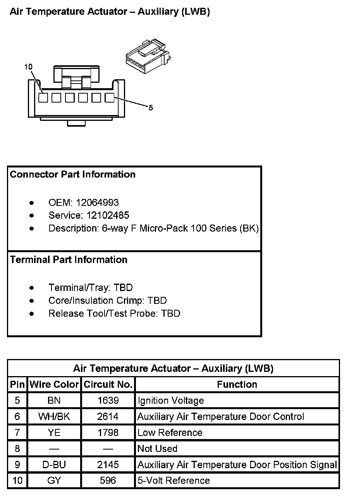
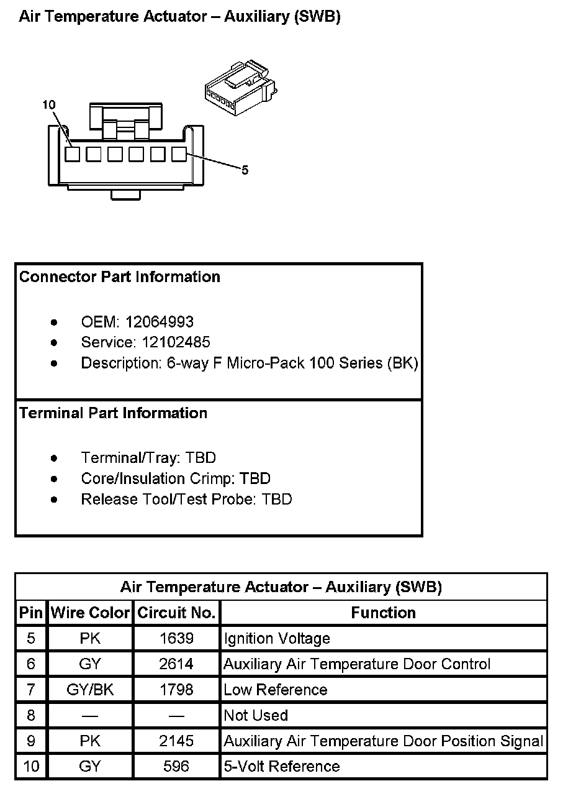
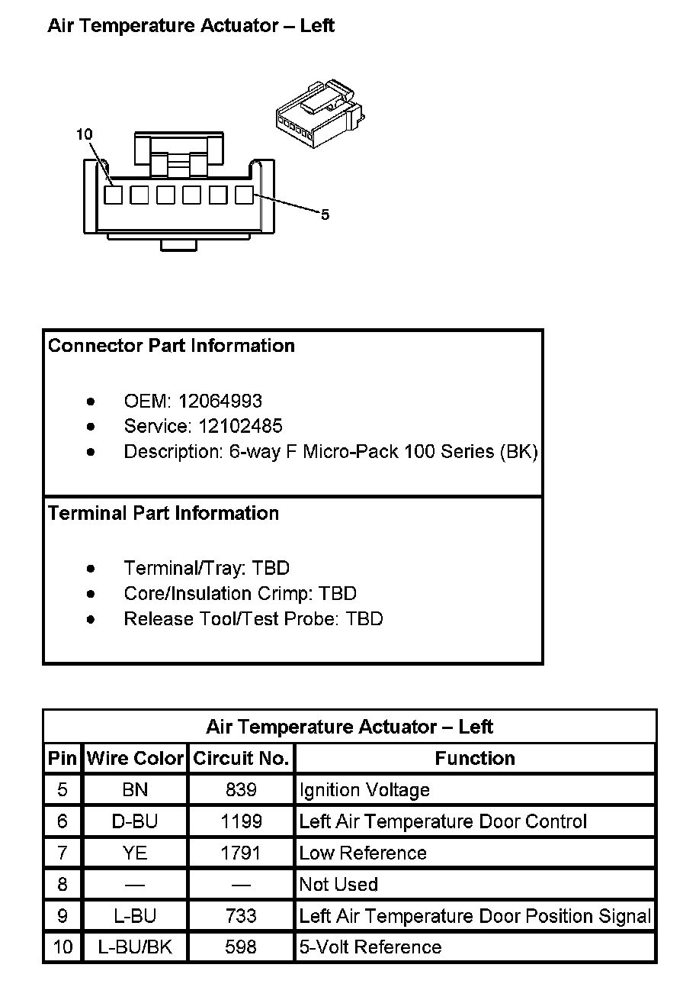
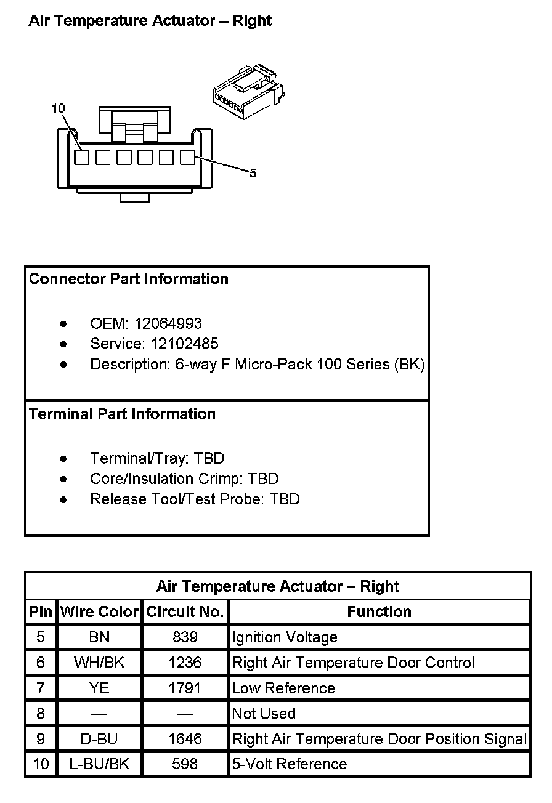

Operation CHARM
: Car repair manuals for everyone.
Home
>>
Cadillac
>>
2007
>>
Escalade ESV AWD V8-6.2L
>>
Repair and Diagnosis
>>
Diagrams
>>
Connector Views
>>
Air Door Actuator / Motor, HVAC
>>
HVAC System - Automatic
>>
Air Temperature Actuator
Air Temperature Actuator
Air Temperature Actuator - Auxiliary (LWB):

Air Temperature Actuator - Auxiliary (SWB):

Air Temperature Actuator - Left:

Air Temperature Actuator - Right:
